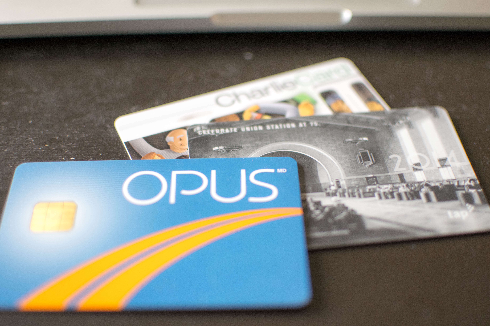
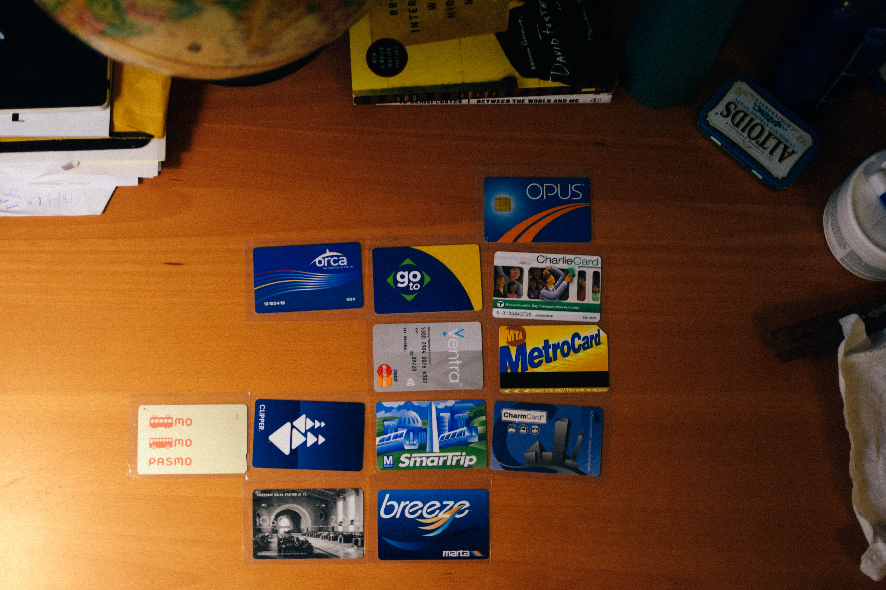
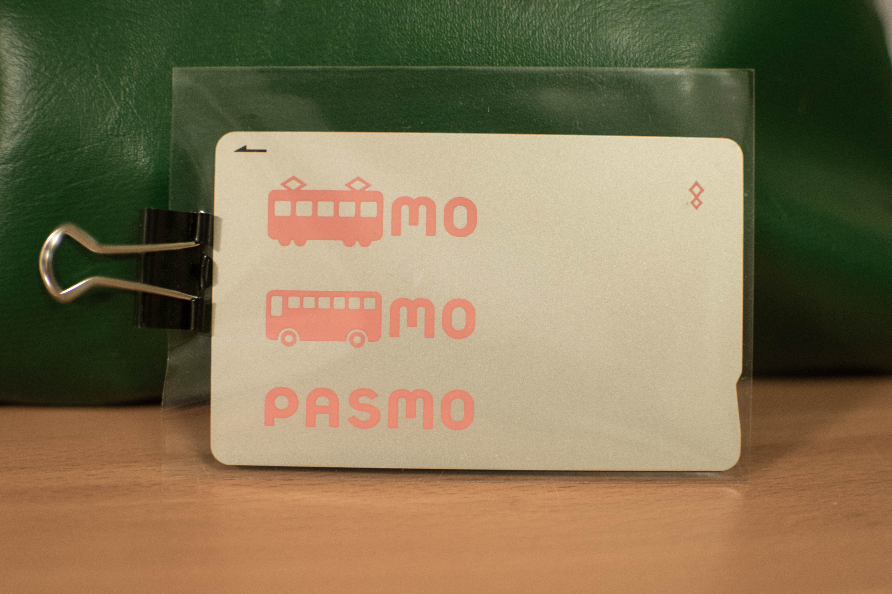

Most major cities these days have some sort of subway system (yes, even Los Angeles), and these systems usually have some way of easily making payments. This project maps cities, representing them with their respective transit cards.

The cards are arranged in an 'north is up' orientation.

The cards themselves differ in many ways, just like various transit systems have their own idiosyncrasies. The most striking difference is their design, with each city attempting to present its brand. Sometimes the cards have commemorative designs, like Los Angeles celebrating 75 years of Union Station. Boston's CharlieCard has its namesake front-and-center.

Most work for more than one mode of transport; buses in addition to trains. For example the San Francisco Clipper Card works not only for BART, but also for MUNI and Caltrain.